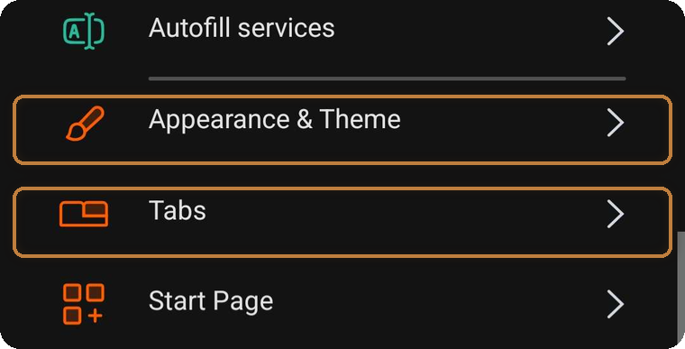
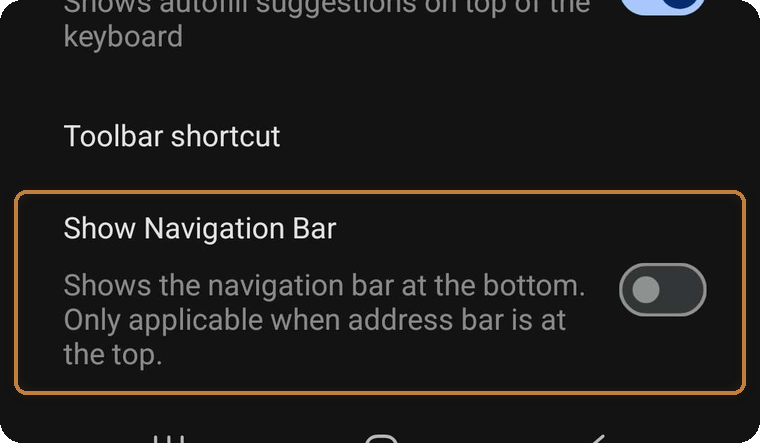
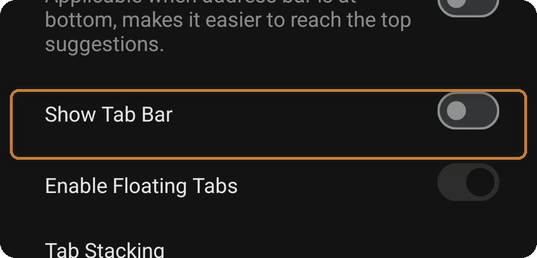

← Kai's Export Tools · Help & FAQ
Out of the box, Vivaldi shows a tab bar along the top and a navigation bar at the bottom. Handy — but they eat screen space. Turn both off and Vivaldi looks and feels just like any other mobile browser. Two minutes, fully reversible.
Tap the small Vivaldi "V" logo in the top-right corner of the browser, then tap Settings.
You'll see a long list — the two entries you need are Appearance & Theme and Tabs.

Open Appearance & Theme.
Scroll down and toggle off Show Navigation Bar. The bottom bar disappears immediately.

Go back to the Settings list and open Tabs.
Toggle off Show Tab Bar. Done — your tabs still exist; you just switch them from Vivaldi's tab switcher instead of a bar taking up the screen.
